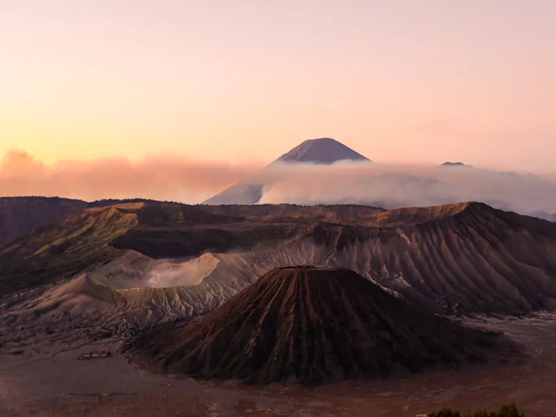
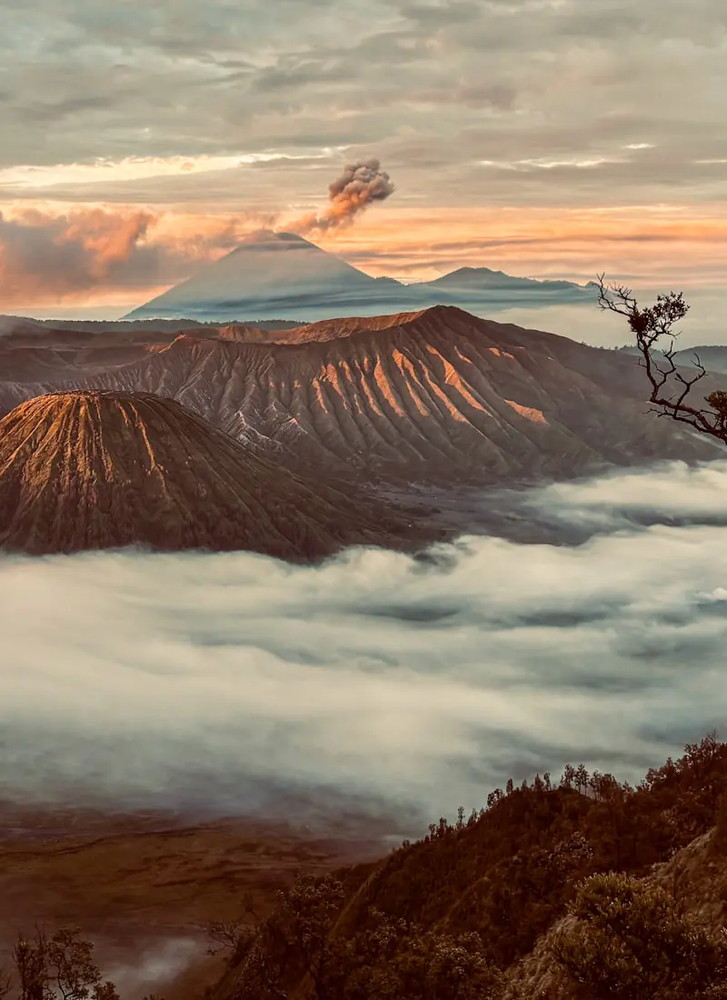
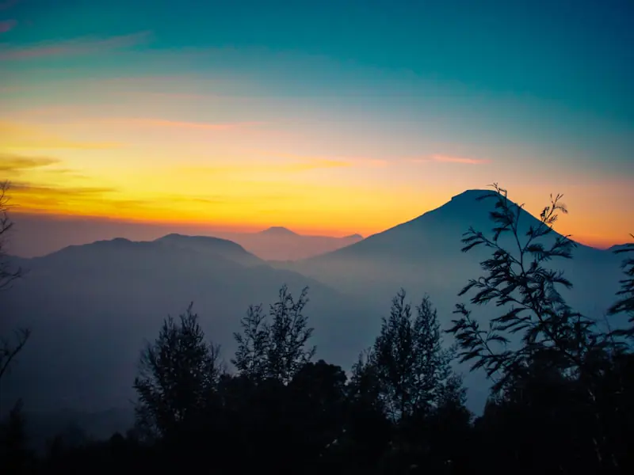
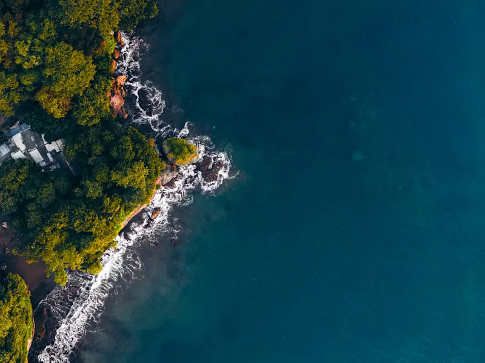
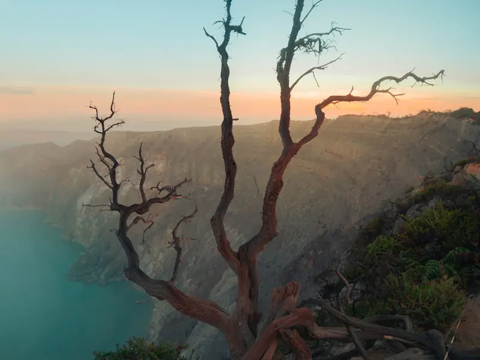
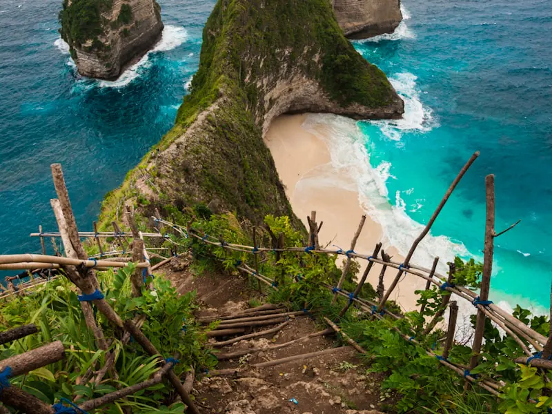
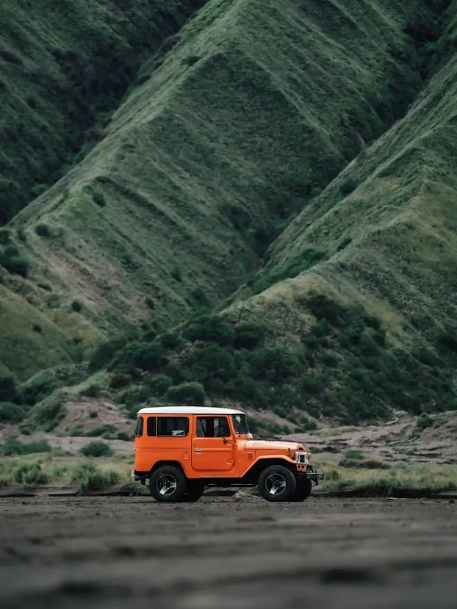
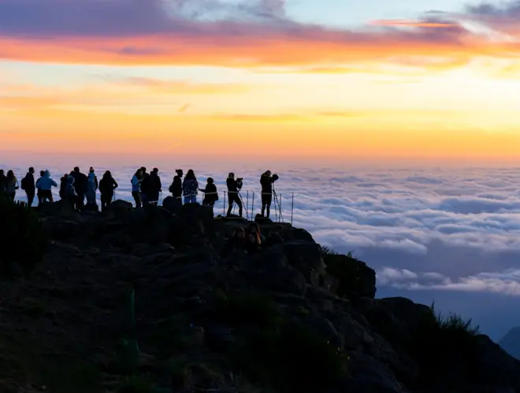
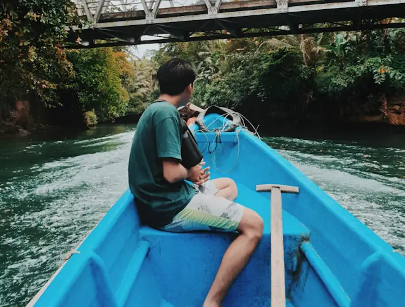
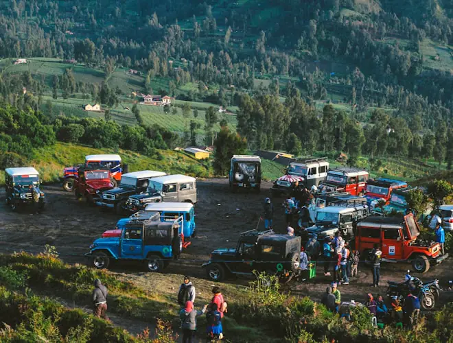

Sisa 6 seat
11 sampai 13 Sep 2026 / 3 hari 2 malam
Bromo Sunrise & Kawah
Rp 350.000per orang
Sudah termasuk bus PP, jeep 4x4, homestay 1 malam, 3x makan, tiket masuk, dan tour leader.
Kunci seat Bromo
Open trip Bandung sejak 2019
Bromo, Dieng, Pangandaran, Ijen, Bali. Transport, makan, penginapan, dan tiket masuk sudah dihitung di depan. Kamu tinggal datang ke titik kumpul.
Dibalas rata-rata 8 menit di jam 08.00 sampai 21.00. Belum bayar apa pun sampai kamu yakin.
Trip terdekat
Angka di bawah ini harga final per orang, bukan harga mulai dari. Sisa seat diperbarui tiap hari. Tidak ada satu pun yang harus di-DM dulu.

Sisa 6 seat
11 sampai 13 Sep 2026 / 3 hari 2 malam
Rp 350.000per orang
Sudah termasuk bus PP, jeep 4x4, homestay 1 malam, 3x makan, tiket masuk, dan tour leader.
Kunci seat Bromo
Sisa 4 seat
18 sampai 20 Sep 2026 / 3 hari 2 malam
Rp 400.000per orang
Sudah termasuk bus PP, homestay 1 malam, 3x makan, dan tiket 5 spot termasuk Telaga Warna.
Kunci seat Dieng
Sisa 11 seat
26 sampai 27 Sep 2026 / 2 hari 1 malam
Rp 300.000per orang
Sudah termasuk bus PP, penginapan 1 malam, 2x makan, body rafting, dan sewa pelampung.
Kunci seat Pangandaran
Sisa 9 seat
2 sampai 4 Okt 2026 / 3 hari 2 malam
Rp 550.000per orang
Sudah termasuk bus PP, homestay 1 malam, 3x makan, masker gas, dan tiket masuk kawah.
Kunci seat Ijen
Sisa 3 seat
9 sampai 13 Okt 2026 / 5 hari 4 malam
Rp 1.400.000per orang
Sudah termasuk bus PP dan kapal penyeberangan, hotel 4 malam, 6x makan, dan tiket 8 spot.
Kunci seat BaliBelum termasuk: oleh-oleh, sewa kuda atau ojek di Bromo, dan pengeluaran pribadi. Sengaja kami tulis biar tidak ada kaget di lokasi.
Titik kumpul: depan BIP, Jalan Merdeka Bandung. Bisa naik dari Cimahi atau Padalarang tanpa biaya tambahan.
Kenapa peserta tenang
Bukan karena kami paling murah. Karena tidak ada yang disembunyikan sampai kamu sudah bayar.
Tanggal yang sudah dipasang tidak pernah kami geser. Kalau kuota kurang, kami yang menanggung selisihnya, bukan kamu. Dua tahun terakhir, nol trip batal dari sisi kami.
Transport, makan, penginapan, tiket masuk, semua sudah dihitung di harga. Yang belum termasuk juga kami tulis terang di halaman ini, bukan disebut belakangan lewat chat.
Satu TL untuk maksimal 15 peserta, minimal sudah 30 trip, dan pegang sertifikat P3K. Bukan panitia dadakan yang baru kenal rutenya minggu lalu.
Foto dan video dikirim lewat Google Drive maksimal 2 hari setelah pulang. Tanpa watermark, tanpa biaya tambahan, tanpa perlu kamu tagih dulu.
Cara ikut
Tidak ada aplikasi yang harus diunduh dan tidak ada akun yang harus dibuat. Semua lewat WhatsApp.
Sebut nama trip dan tanggalnya. Kami balas sisa seat hari itu juga, plus rincian jam berangkat dan barang yang perlu dibawa.
Transfer ke rekening perusahaan, bukan rekening pribadi. Bukti masuk langsung dibalas invoice bernomor dan nama kamu masuk manifest.
Sisanya dilunasi tiga hari sebelum berangkat. Grup WhatsApp peserta dibuka H-5 supaya kamu sudah kenal rombongan sebelum ketemu.
Diambil peserta dan tim dokumentasi kami, bukan stok foto brosur.






Semua foto trip dikirim ke grup peserta maksimal 2 hari setelah pulang, ukuran penuh, tanpa watermark.
Diambil dari chat grup peserta setelah trip selesai.
Gue solo, awalnya takut jadi obat nyamuk. Ternyata baru sejam di jalan udah kayak temen lama. Bromonya? Seru parah.Nadia, 24 Bandung, trip Bromo Juli 2026
Yang bikin gue balik lagi tuh TL-nya. Jam 2 pagi masih sempet bikinin kopi buat satu bus. Nggak ada acara telat telatan.Reza, 27 Cimahi, trip Dieng Agustus 2026
Fotonya dikirim H+2, udah rapi, nggak perlu nagih dulu. Kecil sih, tapi jarang banget ada yang kayak gitu.Sabrina, 22 Bandung, trip Pangandaran Agustus 2026
Yang sering ditanya
Kalau yang kamu cari belum ada di sini, chat saja. Tidak perlu basa basi.
Titik kumpul utama di depan BIP, Jalan Merdeka Bandung. Bus berangkat tepat waktu, biasanya pukul 20.00. Kalau kamu dari arah barat, bisa naik di Cimahi atau Padalarang tanpa biaya tambahan, tinggal bilang waktu booking.
Boleh, dan itu justru yang paling banyak. Hampir separuh peserta kami datang sendirian. Seat bus dan kamar penginapan diatur per gender, jadi tidak perlu khawatir sekamar sama orang asing beda gender. Grup WhatsApp dibuka H-5 supaya sudah saling kenal sebelum ketemu.
Kalau kami yang membatalkan, misalnya cuaca ekstrem atau jalur ditutup, DP kembali 100 persen dalam 2 hari kerja, atau digeser ke tanggal lain tanpa tambah biaya. Pilihannya di kamu. Kalau kamu yang batal, DP tidak kembali, tapi seat boleh dioper ke teman sampai H-2 tanpa potongan.
Bisa. Pangandaran dan Bali terbuka mulai usia 7 tahun. Bromo, Dieng, dan Ijen minimal 12 tahun karena treknya nanjak dan suhunya bisa turun sampai 5 derajat sebelum subuh. Anak di bawah 3 tahun tidak dikenakan biaya, tapi tetap harus didaftarkan supaya masuk manifest.
Bromo dan Bali paling cepat penuh. Kunci seat sekarang dengan Rp 100.000, sisanya urus nanti.
Balasan rata-rata 8 menit. Kalau cuma mau tanya tanya juga tidak apa apa.